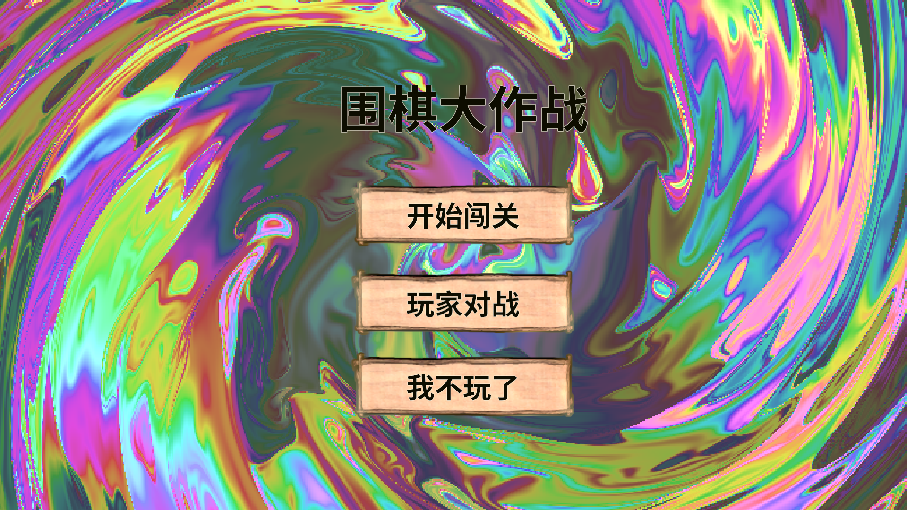
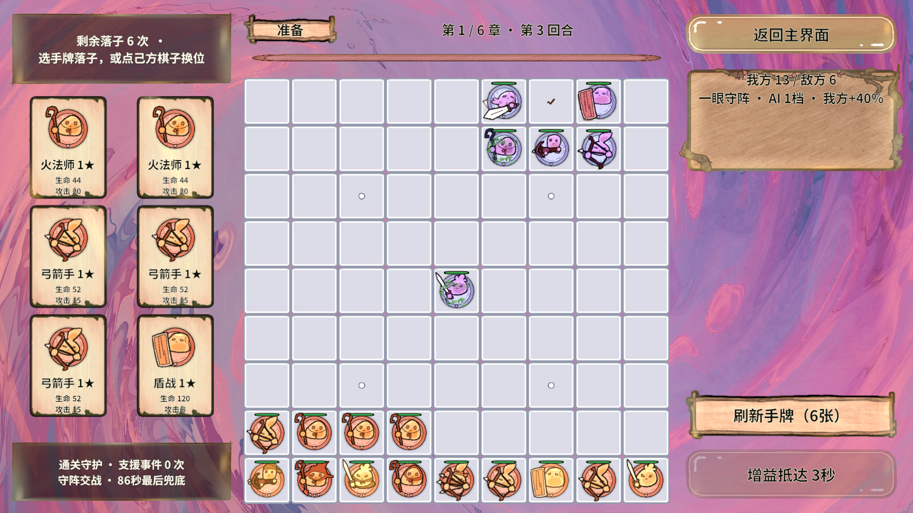
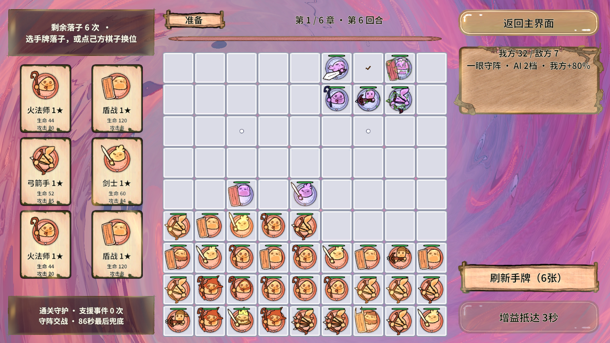
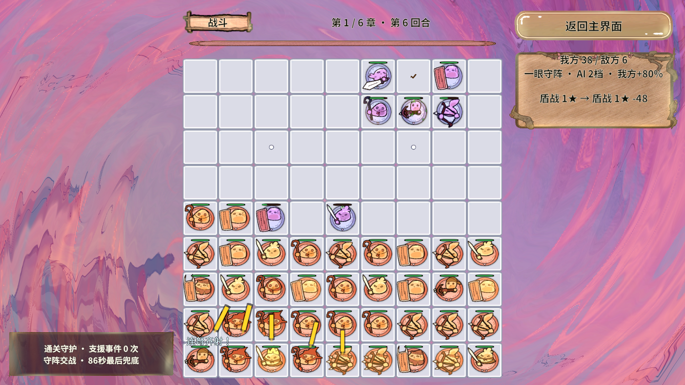
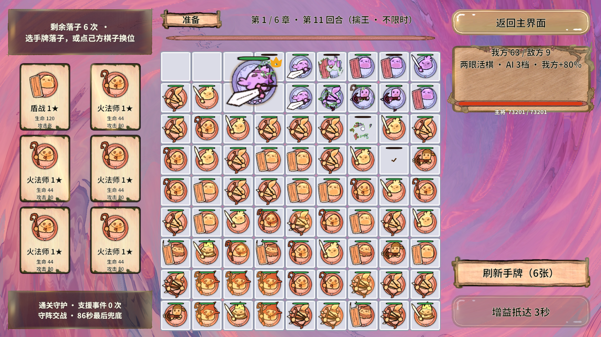
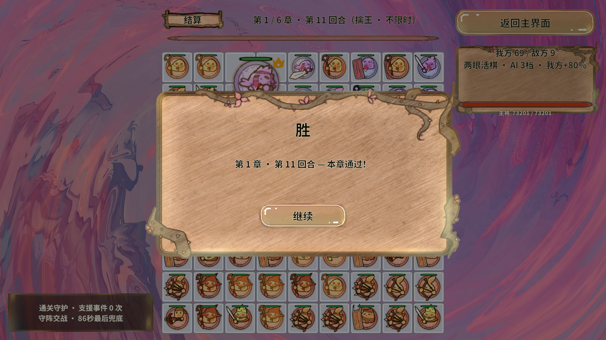
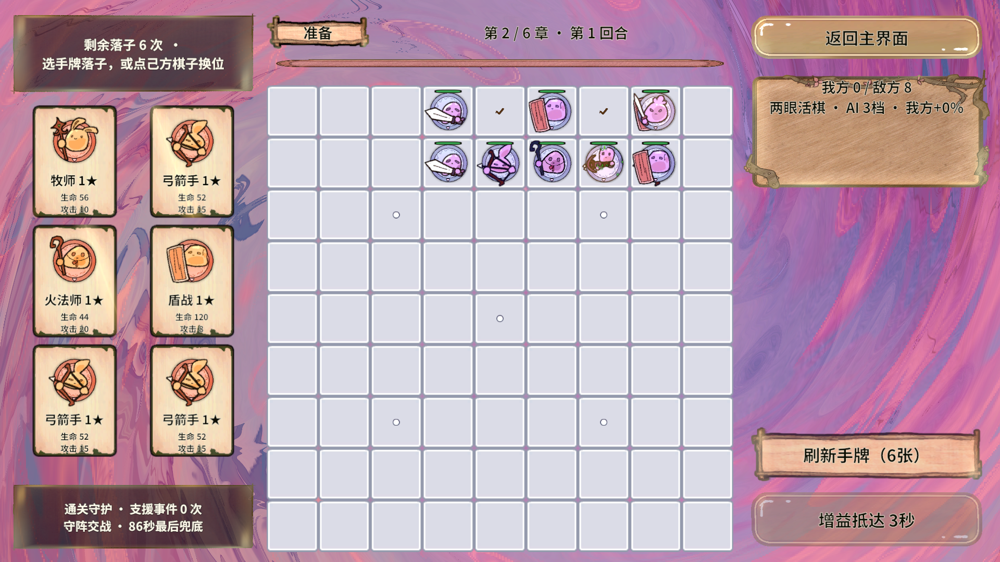
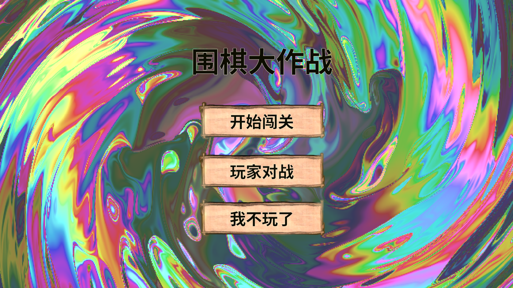

完整流程通过，条件写清楚
在用户指定的测试强化下，从正式入口首页开始，模拟选择第一章、逐轮下完六张手牌、开战、结算、领取章节奖励，再验证第二章准备并返回首页。最终框架作业与业务执行器均通过。
- 执行时间 · 北京时间
- 2026-10-21 23:04:21 — 23:05:36
- 运行环境
- Unity 2022.3.15f1c1 · Editor PlayMode · DX11
- 场景与布局
- StartScene → GameScene → StartScene
1920 × 1080 横屏 - 资源加载
- 编辑器直读，未重打AB、未执行AB冷启动
- 测试配置
- 攻击 +500% / 攻速 +500% / 防御等效 +500%
- 重复与性能门限
- repeat=1 / warmup=0；性能阈值均为0（关闭）
电脑插件用于实际启动和观察Unity；流程动作由Unity EventSystem指针事件模拟完成，GM负责启动、查询和收尾。它不等同于158次操作系统鼠标点击或手机真机触摸。
11轮全部真实结算，66次落牌已核对
框架作业 + 业务计划
通过success=true；completed/requested=1/1；failedIterations=0；errors=[]。业务state=passed，64/64步骤完成，158次指针点击，66张手牌落点与扣牌一致。计划内业务GM动作=0。
| 回合 | 开战敌棋 | 模拟秒 | 我方攻击 | 敌方攻击 | 正伤害事件 | 结算 |
|---|---|---|---|---|---|---|
| 1 | 6 | 0.6250 | 50 | 0 | 50 | 玩家胜利 |
| 2 | 6 | 0.6250 | 87 | 0 | 87 | 玩家胜利 |
| 3 | 6 | 1.5625 | 475 | 1 | 476 | 玩家胜利 |
| 4 | 6 | 1.5625 | 479 | 1 | 480 | 玩家胜利 |
| 5 | 6 | 1.2500 | 539 | 0 | 539 | 玩家胜利 |
| 6 | 7 | 1.2500 | 646 | 0 | 646 | 玩家胜利 |
| 7 | 7 | 1.2500 | 684 | 0 | 684 | 玩家胜利 |
| 8 | 7 | 0.9375 | 580 | 0 | 580 | 玩家胜利 |
| 9 | 7 | 0.9375 | 700 | 0 | 700 | 玩家胜利 |
| 10 | 7 | 0.9375 | 584 | 0 | 584 | 玩家胜利 |
| 11 · Boss | 9 | 0.3125 | 0 | 0 | 0 | 玩家胜利 · 擒王 |
累计我方攻击 4,824 次、敌方攻击 2 次、正伤害事件 4,826 次。高强化会让大多数敌人来不及出手，因此这组数字只能证明加速流程可执行，不能用于证明普通难度“有来有回”。
代码放在Animation，按职责细分
保留用户指定的 Assets/GameScripts/Animation 路径，新增Contracts、Input、Flow、Diagnostics、Fixtures子目录。使用现有Revolution门面和现有自动化客户端，没有修改框架快照。
| 文件 / 模块 | 职责与关键设计 |
|---|---|
| Contracts / GameAutomationPlan | 可序列化计划、强化、步骤和证据；操作及数值边界在执行前校验。 |
| Input / GamePointerInput | 按真实控件坐标执行RaycastAll，只接受最上层命中；分帧按下/松开，不直接Invoke按钮或落子服务。 |
| Flow / GameAutomationRunner | RevServices常驻服务，Unscaled RevTimer分帧推进；逐张检查手牌、额度、占格及棋种；观察真实战斗事件。 |
| Diagnostics / GameAutomationCommands | 六个开发态GM入口；开始、状态、检查、报告、取消、收尾。失败立即返回原始原因。 |
| Fixtures / BattleService.Automation | 原BattleService的partial开发片段；临时强化租约接入真实攻速、攻击伤害和统一受伤出口。 |
| GameBootstrap与战斗钩子 | 开发态注册/注销执行器；三处小钩子启用强化，正式发行构建不包含它们。 |
| Tests / BusinessFlowAutomation | run_flow.py复用Revolution.Automation；first-chapter.json是可改业务计划；README说明复现与自定义步骤。 |
核心方法、契约、字段和重要算法步骤已加中文说明。每个执行器只清理自己的owner：指针、计时器、事件与强化租约成对回收。完整源码对应的SHA-256保存在附件，基线提交为3115628。
Boss零次攻击仍可合法获胜
本游戏的原有规则是：Boss主将死亡或被锁死即判玩家胜利。六张牌持续积累后，后期棋盘被围得很密，主将可能在第一仿真小步就失去全部气，不需要先发生一次攻击。
最终运行开战时确有9颗敌棋，主将编号129；0.3125模拟秒后，真实BattleEnded给出玩家胜利，执行器确认同一主将满足死亡/锁死条件，记录kingCaptured=true。测试没有主动杀Boss或重写胜负。
// 只读观察原有规则，不制造胜负：
开战：保存敌军数量、主将编号。
结算：核对同一主将死亡或锁死。
通章：逐轮检查1～11轮真实BattleEnded；
普通回合要求观察到我方攻击与正伤害；
擒王回合允许以已核实的主将状态作证。实测截图，按画面实际阶段标注
以下8张为Unity实际Game视口原始PNG，均为1920×1080；通过MCP/ScreenCapture取证。点击可放大。奖励选择以业务逐步证据为准，本轮未捕获奖励面板停留画面。


从首页开始点击放大 ↗

第 3 轮准备点击放大 ↗

第 6 轮准备点击放大 ↗

第 6 轮战斗点击放大 ↗

第 11 轮 Boss 准备点击放大 ↗

Boss 真实结算点击放大 ↗

章节奖励后进入第二章点击放大 ↗

返回首页点击放大 ↗性能只记录，最大帧仍有明显尖峰
平均帧时间
P95帧时间
最大帧时间
采样10,151帧；峰值MonoUsed为716,156,928 B（约683.0 MiB），峰值AllocatedMemory为310,378,195 B（约296.0 MiB）。迭代记录gc0/gc1/gc2均为5，不能宣称零GC。计数器口径不同，不能相加当作总内存或GPU显存。
离线普通规则回归重新执行通过：181个场景、4,167条断言，其中FairFeedbackBuffer子组2,794条。离线工程未定义UNITY_EDITOR，所以这部分不是500%强化钩子的独立数值验收。详细输出见附件。
中止记录与未完成项也保留
首次普通数值运行
用户改配置后取消实测前2轮玩家胜利；第3轮期间为执行新要求取消，未跑完整章。最终报告17/64步、10次落牌、Unity错误0。它不是完整普通难度通章通过。
第二次500% / 六牌运行
测试断言修正前中止11轮均收到玩家胜利，但旧断言要求Boss也必须先攻击。经只读查询确认主将仍存活、气0、锁死；取消作业后修正测试断言，再从首页重跑，得到本报告最终通过记录。未改擒王玩法规则。
补充输入遮罩与取消专项
尚未通过完整通章之后尝试的临时探针返回“输入穿透了最上层遮罩”；它在同一执行栈新建遮罩即射线检测，尚未验证布局/注册就绪。后续重试的首页前置已不满足，返回NullReferenceException；随后电脑操作被用户Esc停止。当前证据不足以断定是适配器缺陷或夹具问题，不能计为通过；两份原始失败和探针代码已归档，等待独立分帧复测。
- 普通难度完整通章、多次循环、第二章以后全章流程未执行。
- Boss九技能、正式发行包、AB冷启动、手机触屏、GPU/内存泄漏专项未执行。
- 运行期间曾观察到声音Duplicated与对象池清理Warning；主作业错误门禁不统计Warning，没有完整Warning数量结论。
- 主作业的Unity错误0仅对应23:04:21–23:05:36；不覆盖其后的临时探针异常。
原始报告与复现方式
本报告首先验证Revolution在真实业务中的可行性：现有自动化桥/GM → 常驻服务 → 分帧指针输入 → UI与战斗流程 → RevScene跨场景 → 事件观察与owner收尾已经实际联通。它支持这条编辑器业务链路可行，不等于整个框架或所有平台完成验收。
复现第一章和离线回归
# 仓库根目录；Unity打开项目且编译完成，现有自动化桥已开启。
python -X utf8 RevGame_Client/Tests/BusinessFlowAutomation/run_flow.py RevGame_Client/Tests/BusinessFlowAutomation/plans/first-chapter.json
# 已手动进入Play时明确加 --attach；它会保留原来的Play状态。
# 仅校验计划加 --validate-only，不能当作运行通过。
dotnet run --project RevGame_Client/Tests/CombatAttackRegression/CombatAttackRegression.csproj -c Release --no-restore完整框架结果摘要
{
"name": "第一章六牌与500%测试强化通章",
"resultPath": "D:\\AAAAAAA王者荣耀项目组工作日志\\RevGame\\RevGame_Client\\UnityProject\\RevGame.Unity\\Library\\RevolutionAutomation\\jobs\\1066c64d325b4aa4b75d658357b51e96\\scenario-result.json",
"startedUtc": "2026-10-21T15:04:21.8340523+00:00",
"finishedUtc": "2026-10-21T15:05:36.5317155+00:00",
"unityVersion": "2022.3.15f1c1",
"environment": "Unity Editor PlayMode",
"unityLogPath": "D:\\AAAAAAA王者荣耀项目组工作日志\\RevGame\\RevGame_Client\\UnityProject\\RevGame.Unity\\Library\\RevolutionAutomation\\jobs\\1066c64d325b4aa4b75d658357b51e96\\unity-errors.jsonl",
"requested": 1,
"completed": 1,
"failedIterations": 0,
"warmupCompleted": 0,
"success": true,
"cancelled": false,
"elapsedSeconds": 74.699091,
"frameSamples": 10151,
"frameMeanMs": 7.35482902754362,
"frameP95Ms": 12.6,
"frameMaxMs": 969.0765142440796,
"peakMonoUsedBytes": 716156928,
"peakAllocatedMemoryBytes": 310378195,
"unityErrors": 0,
"errors": []
}使用说明：BusinessFlowAutomation / README ↗。本轮框架作业ID为1066c64d325b4aa4b75d658357b51e96；Library、临时结果与外部AB目录不提交，只归档选定证据。
报告日期2026-10-21，时区Asia/Shanghai；数据对应基线3115628加本次自动化功能源码，SHA-256见附件。后续代码变化不会自动更新本次实测结论。